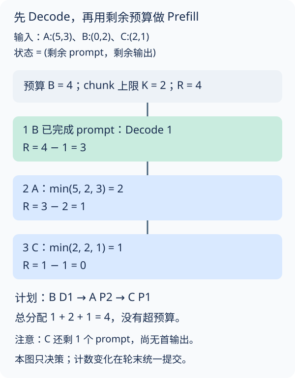
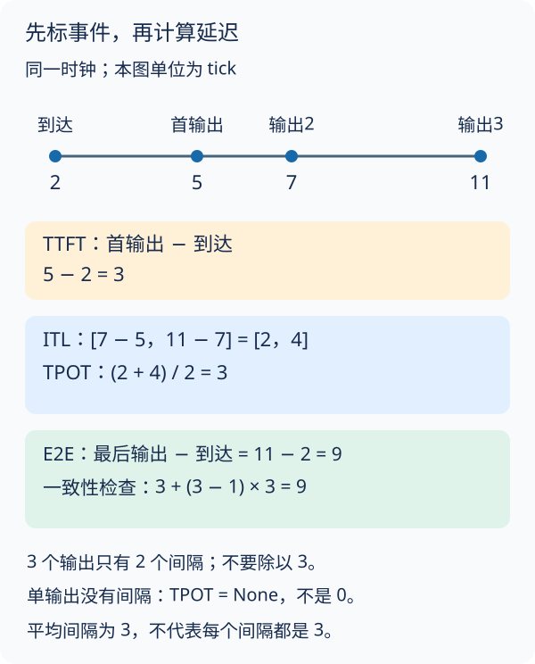

先修：L11。建议分两次学习，每次 60–80 分钟。配套 Lab5 Q2、HW6、Project2 Phase2。目标不是记住 TTFT 的缩写，而是能从原始事件推导指标、找出错误统计口径，并解释一个调度参数为何改变结果。
1. 长 prompt 为什么不能只用“一个请求”衡量
一个请求可能只输入 8 个 token，另一个可能输入 8000 个。它们都占一个并发位置，但 prefill 工作量明显不同。如果每轮只限制“请求个数”，就无法描述本轮究竟处理了多少 prompt。反过来，仅限制 token 总量，也不能保证请求状态占用的 KV 内存够用。L11 的三类约束必须继续分开。
Chunked prefill 的做法是把尚未处理的 prompt 分成多轮执行。不是把用户 prompt 截短，也不是每段各生成一个答案，而是保留前一段上下文状态，接着处理下一段；只有整个 prompt 完成时才产生首输出。本周模拟器只用剩余计数表示这件事，并不真的保存 KV 或调用注意力。
vLLM 官方优化文档描述了 decode 优先、剩余 token 预算用于 prefill 的调度方式，并讨论预算对 TTFT 与 ITL 的影响（核对于 2026-10-24）。我们用它理解问题，不把自己的 toy 参数叫作真实引擎参数：本课额外规定每个请求每轮最多一个 chunk，且所有轮固定为 1 tick。真实系统的启用条件、实现细节和性能需要按版本核实。
2. 把“剩余预算”变成可检查的不变式
设本轮预算 B，已选择的 decode 请求有 D 条。普通 decode 每条处理一个新位置，所以先扣除 D，得到 R=B−D。随后按活动顺序逐条访问还在 prefill 的请求。对其中一条，设剩余 prompt 为 P，单请求 chunk 上限为 K：
本次 count = min(P, K, R)
分配后 R = R - count
始终满足：已分配总数 + R = B，且 R >= 0为什么同时取三个最小值？只看 P 会突破整轮预算；只看 K 会处理并不存在的尾部 token；只看 R 则会让单条请求越过 chunk 上限。count=0 时不添加动作。分配完这条就往下走，不回头给它第二个 chunk。因此剩余预算不必总为 0，预算是上限而非工作量目标。

读图时先遮住最下面的计划，自己在每一步写出 R。图里的 1、2、1 是本轮输入 token 数，不是三条请求的剩余输出长度，也不是 KV 块数。最后检查所有 count 相加是否不超过 4。
3. 案例一：从一张计划推到完整结束
现在已经有三个活动请求，轮开始状态为 A:(5,3), B:(0,2), C:(2,1)；预算 4、chunk 2。B 先前已经得到首 token，这里只观察它后面还需生成的两个输出，不能拿这一段记录直接算 B 的完整 TTFT。
| 区间 | 计划（按执行顺序） | 轮末 active | 本轮输出 | 未用预算 |
|---|---|---|---|---|
| 0→1 | B D1，A P2，C P1 | A:(3,3)，B:(0,1)，C:(1,1) | B | 0 |
| 1→2 | B D1，A P2，C P1 | A:(1,3) | B,C | 0 |
| 2→3 | A P1 | A:(0,2) | A | 3 |
| 3→4 | A D1 | A:(0,1) | A | 3 |
| 4→5 | A D1 | 空 | A | 3 |
第一轮并不是给 A 完整 2、给 C 完整 2：B 已经占 1，只剩 3，所以 C 只能处理 1。第二轮 C 刚完成 prefill，产出唯一输出后结束。第三轮 A 的最后 1 个 prompt token 产生首输出，而不是第六个“prompt 输出”。这段观察内产生的时间为 A=[3,4,5]、B=[1,2]、C=[2]；B 的两次输出并不包含首 token。
手写一个只处理一条 prefill 的小函数，再扩展到多条，是比一口气写整个调度器更可靠的路径：
def allocate_chunk(prefill_remaining, chunk_size, remaining_budget):
return min(prefill_remaining, chunk_size, remaining_budget)
assert allocate_chunk(5, 2, 3) == 2
assert allocate_chunk(2, 2, 1) == 1
assert allocate_chunk(1, 2, 8) == 1这个 toy 片段假定输入合法，不是评分接口。下一步增加一个 remaining_budget 变量和列表循环，每加入计划就扣减 count；再把 decode 遍历放在前面；最后补全部输入验证。每完成一步都保留一组能手算的断言，而不是等整题写完才运行测试。
4. 案例二：小 chunk 为什么可能更晚得到首 token
固定两个请求 long=(0,5,2)、short=(1,1,1)，max_active=2, token_budget=3，只改变 chunk=1 或 3。两者都逐轮补位，不能把这个实验误写成固定批次与连续批次的比较。
| 区间 | chunk=1 的计划 | chunk=3 的计划 |
|---|---|---|
| 0→1 | long P1 | long P3 |
| 1→2 | long P1，short P1 | long P2，short P1 |
| 2→3 | long P1 | long D1 |
| 3→4 | long P1 | 全部完成 |
| 4→5 | long P1 | 全部完成 |
| 5→6 | long D1 | 全部完成 |
chunk=1 时 long 输出 [5,6]，short 输出 [2]；chunk=3 时 long 输出 [2,3]，short 仍是 [2]。平均 TTFT 分别为 (5+1)/2=3 与 (2+1)/2=1.5 tick；完成时间为 6 与 3。相同的 3 个输出，对应输出吞吐 3/6 与 3/3 token/tick。两个配置里 long 的 TPOT 都为 1。
结论应写成“在这个固定 tick 模型、此输入及预算下，增大 chunk 减少 long 的 prefill 轮数，short 未受影响”。不能写“小 chunk 没用”或“真实机器增大 chunk 一定加速两倍”。若 short 的 prompt 变长，剩余预算可能不够；若单轮物理耗时依批次变化，short 的用户等待也会变。准确解释要同时说出改变了什么、固定了什么、没有模拟什么。
5. 先画事件，再推导 TTFT、ITL、TPOT 和 E2E
到达时刻记为 arrival，输出完成时刻依次为 t1、t2、…、tn。所有时间必须来自同一时钟、同一单位，且严格递增。先把用户经历分成“等第一字”和“已有第一字后继续等”两段，而不是先猜一个除法。
TTFT = t1 - arrival
ITL 列表 = [t2-t1, t3-t2, ..., tn-t(n-1)]
E2E = tn - arrival
TPOT = sum(ITL) / (n-1) = (tn-t1) / (n-1)，n > 1TPOT 中间的求和会抵消所有中间时间戳，只剩末时刻减首时刻，因此可以用端点快速计算。分母是 n−1，因为三个输出只有两个相邻间隔。由同样的拆分还能得到一致性检查：E2E = TTFT + (n-1) * TPOT，仅对 n>1 使用。首输出之前的排队和 prefill 全包含在 TTFT 中，不应再额外加一遍。

读图时先看上方原始事件：2 到 5 是首输出等待，5 到 7 与 7 到 11 是两个不同的输出间隔。它们平均为 3，却不代表两个间隔都等于 3。最后用下方等式检查总等待是否还原成 9。
案例三：同一个“3”，可能来自错误公式
arrival=2，输出 [5,7,11]：TTFT=5−2=3，ITL=[2,4]，TPOT=(2+4)/2=3，E2E=11−2=9。这里错误公式 E2E/n=9/3 也碰巧得到 3，所以一个测试通过不能证明公式正确。
只把 arrival 改为 0，输出时间不变：TTFT 变为 5，E2E 变为 11，TPOT 仍是 3；错误公式却得到 11/3。首 token 前的等待不应该改变首 token 后的平均间隔，这就是能击穿错误实现的最小改动。
只有一个输出时，没有任何 ITL，TPOT 无定义，本课返回 None；不是 0，也不是 TTFT。空输出列表则不满足“完成请求”契约，应报错，不可当成单输出。HW6 允许首输出与 arrival 相同以支持通用时间数据，但本模拟器最少要执行一轮，因此它自己的 TTFT 至少是 1 tick。计算器的允许范围可以比某一种数据源更宽。
6. 案例四：为什么“平均 TPOT”有两种答案
三个完成请求为 A=(0,[1,5])、B=(0,[2,3,4,5])、C=(1,[2])。逐个算完后再汇总：
| 请求 | TTFT | ITL | TPOT | 是否进入平均 TPOT |
|---|---|---|---|---|
| A | 1 | [4] | 4 | 是 |
| B | 2 | [1,1,1] | 1 | 是 |
| C | 1 | 空 | None | 否 |
请求等权 mean_ttft=(1+2+1)/3=4/3；请求等权 mean_tpot=(4+1)/2=2.5。若把所有间隔合在一起，则得到 (4+1+1+1)/4=1.75，B 因输出更长被赋予更高权重。这两个统计量回答不同问题，不能把它们混用。把 C 的 None 擅自转成 0 会进一步得到错误的 5/3。
本课 HW6 选择请求等权口径，是为了每条完成请求权重相同，并非宣称它适用于所有业务。平均值还会掩盖个别很慢的请求；真实报告需要说明分布、分位数、未完成请求和失败情况，不能只报一个漂亮平均数。
7. 案例五：吞吐高，不代表请求都达标
把观察窗口明确规定为 [0,T]。本课只接收在此窗口内已完成且时间合法的请求，T 必须为正。SLO 是服务目标：TTFT 不超过给定上限，并且有定义的 TPOT 也不超过上限；等于上限算通过，单输出只检查 TTFT。
输出吞吐 = 完成请求的输出 token 总数 / T
请求 goodput = 同时达到适用 SLO 的请求数 / T窗口 T=6，限制 TTFT≤2、TPOT≤2；三个请求为 A=(0,[2,4])、B=(0,[2,6])、C=(1,[2])。A 得到 (2,2)，通过；B 得到 (2,4)，未通过；C 得到 (1,None)，通过。因此 goodput=2/6 请求/时间单位；输出吞吐=(2+2+1)/6=5/6 token/时间单位。若时间单位来自实验，必须写 tick，不能标成秒。
把窗口改成 5 不是“删掉超时的 B 再算”：B 的最后输出在 6，数据不符合窗口契约，HW6 必须报错。把窗口扩大为 8，输入记录不变，则 goodput=2/8、输出吞吐=5/8；多观察的空闲时间也在分母内。真实在线压测还需统计未完成、取消与失败请求；本作业的“完成请求列表”没有这些信息，不能冒充全量在线服务结论。
8. 从约束推出一个看似奇怪、其实必然的结果
Project2 要求 token_budget >= max_active，活动 decode 数又不会超过 max_active。因此每轮的所有活动 decode 都能拿到一个 token 份额；本阶段也没有抢占或取消，轮长恒为 1。某请求得到首输出后，在后续每一轮都会继续输出，直到结束，所以所有 n>1 请求的 ITL 都是 1，TPOT 也必为 1 tick。
这是推导，不是实验偶然。实验里你可以比较排队、首输出时间、补位和完成窗口，却不能用“TPOT 都是 1”证明 chunk size 对真实 GPU 没影响。真实大 prefill 可能改变单轮物理时间；目前成本模型把这种变化刻意删掉了。等将来接入经过测量校准的迭代成本或真实设备，才有条件讨论真实 TTFT/TPOT 权衡。
9. 分级自测与下一步
基础：min(7,3,2) 为什么是 2？arrival=1，输出 [4] 的 TTFT、TPOT、E2E 是什么？
应用：用案例二的输入，把 chunk 改为 2，逐轮填写计划、long 的剩余 prompt、输出列表，然后再算平均 TTFT。不要先看参考结果。
解释：为什么“平均 TPOT=1”不代表全部请求从到达到结束只用了 1 tick？为什么输出吞吐的分子不能改成 prompt+output−1？
展开自测解析
基础：整轮只剩 2 预算，即使请求和 chunk 都更大也不能超用。单输出的三个指标是 3、None、3。应用：chunk=2 时各轮计划为 long P2；long P2 与 short P1；long P1；long D1。long 输出 [3,4]，short [2]，平均 TTFT=(3+1)/2=2。解释：TPOT 不含首次排队和 prefill；输出吞吐只数实际交给用户的输出，prompt+output−1 计的是输入工作量，是另一个指标。
完成 Lab5 时，把预算不变式写在纸上；完成 HW6 时，先画时间线再写公式；完成 Project2 Phase2 时，先过单请求，再过同到达和补位，最后跑实验。三项练习分别训练策略、测量与状态机，不要用某一项的通过替代另两项。